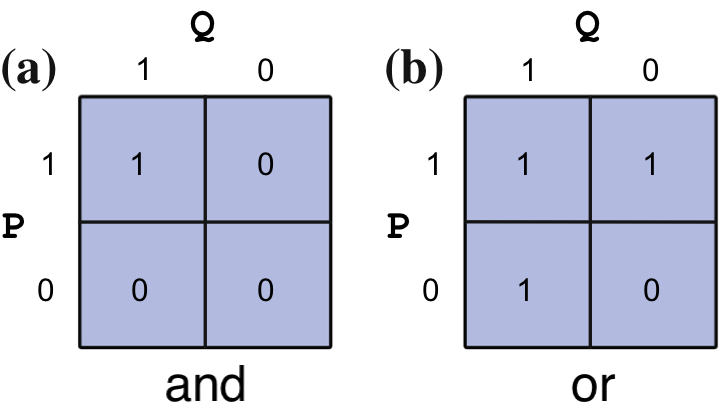

This notebook contains an excerpt from the Python Programming and Numerical Methods - A Guide for Engineers and Scientists, the content is also available at Berkeley Python Numerical Methods.
The copyright of the book belongs to Elsevier. We also have this interactive book online for a better learning experience. The code is released under the MIT license. If you find this content useful, please consider supporting the work on Elsevier or Amazon!
< 1.4 Introduction to Jupyter Notebook | Contents | Chapter 1 Summary and Problems >
Logical Expressions and Operators¶
A logical expression is a statement that can either be true or false. For example, \(a < b\) is a logical expression. It can be true or false depending on what values of \(a\) and \(b\) are given. Note that this differs from a mathematical expression which denotes a truth statement. In the previous example, the mathematical expression \(a < b\) means that \(a\) is less than \(b\), and values of \(a\) and \(b\) where \(a \ge b\) are not permitted. Logical expressions form the basis of computing, so for the purposes of this book, all statements are assumed to be logical rather than mathematical unless otherwise indicated.
In Python, a logical expression that is true will compute to the value “True”. A false expression will compute to the value “False”. This is a new data type we come across - boolean, which has the built-in values True and False. For the purpose of this book, “True” is equivalent to 1, and “False” is equivalent to 0. Distinguishing between the numbers 1 and 0 and the logical values “True” and “False” is beyond the scope of this book, but it is covered in more advanced books on computing. Logical expressions are used to pose questions to Python. For example, “\(3 < 4\)” is equivalent to, “Is 3 less than 4?” Since this statement is true, Python will compute it as 1. However, \(3 > 4\) is false, therefore Python will compute it as 0.
Comparison operators compare the value of two numbers, and they are used to build logical expressions. Python reserves the symbols \(>, >=, <, <=, !=, ==\), to denote “greater than”, “greater than or equal”, “less than”, “less than or equal”, “not equal”, and “equal”, respectively. Let’s start with an example a = 4, b = 2, and see the following table:
Operator |
Description |
Example |
Results |
|---|---|---|---|
> |
greather than |
a > b |
True |
>= |
greater than or equal |
a >= b |
True |
< |
less than |
a < b |
False |
<= |
“less than or equal |
a <= b |
False |
!= |
not equal |
a != b |
True |
== |
equal |
a == b |
False |
TRY IT! Compute the logical expression for “Is 5 equal to 4?” and “Is 2 smaller than 3?”
5 == 4
False
2 < 3
True
Logical operators are operations between two logical expressions that, for the sake of discussion, we call \(P\) and \(Q\). The fundamental logical operators we will use herein are and, or, and not.
Operator |
Description |
Example |
Results |
|---|---|---|---|
and |
greather than |
P and Q |
True if both P and Q are True |
or |
greater than or equal |
P or Q |
True if either P or Q is True |
not |
less than |
not P |
True if P is False |
The truth table of a logical operator or expression gives the result of every truth combination of \(P\) and \(Q\). The truth tables for “and” and “or” are given in the following figure.

TRY IT! Assuming \(P\) is true, use Python to determine if the expression \((P\ AND\ NOT(Q))\ OR\ (P\ AND\ Q)\) is always true regardless of whether or not \(Q\) is true. Logically, can you see why this is the case? First assume \(Q\) is true:
(1 and not 1) or (1 and 1)
1
Now assume \(Q\) is false
(1 and not 0) or (1 and 0)
True
Just as with arithmetic operators, logical operators have an order of operations relative to each other and in relation to arithmetic operators. All arithmetic operations will be executed before comparison operations, which will be executed before logical operations. Parentheses can be used to change the order of operations.
TRY IT! Compute (1 + 3)>(2 + 5)
1 + 3 > 2 + 5
False
TIP! Even when the order of operations is known, it is usually helpful for you and those reading your code to use parentheses to make your intentions clearer. In the preceding example (1 + 3) > (2 + 5) is clearer.
WARNING! In Python’s implementation of logic, 1 is used to denote true and 0 for false. However, 1 and 0 are still numbers. Therefore, Python will allow abuses such as: (3 > 2) + (5 > 4), which will resolve to 2.
(3 > 2) + (5 > 4)
2
WARNING! Although in formal logic, 1 is used to denote true and 0 to denote false, Python slightly abuses notation and it will take any number not equal to 0 to mean true when used in a logical operation. For example, 3 and 1 will compute to true. Do not utilize this feature of Python. Always use 1 to denote a true statement.
TRY IT! A fortnight is a length of time consisting of 14 days. Use a logical expression to determine if there are more than 100,000 seconds in a fortnight.
(14*24*60*60) > 100000
True
< 1.4 Introduction to Jupyter Notebook | Contents | Chapter 1 Summary and Problems >